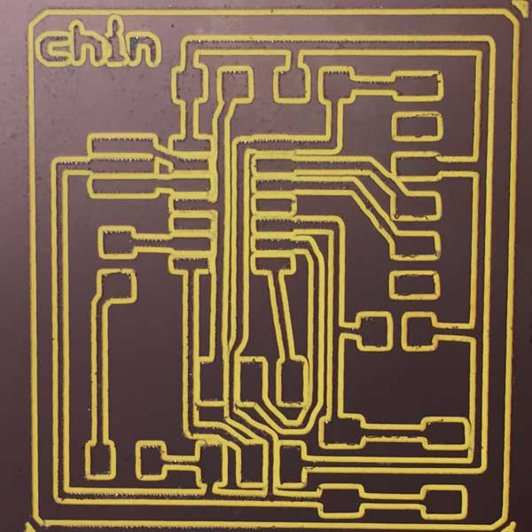

Exercise 06 Electronics Design
Requirement
- Redraw the echo hello-world board
- Add a button & LED to the board
- Mill and stuff board
- Simulate its operations
Introduction
EAGLE is a PCB CAD softwares that is free and cross-platform. It was a seemingly uphill task - design a schematic and board using EAGLE (Easily Applicable Graphical Layout Editor). Fortunately, I was relieved to know that there are tutorials available to help me accomplish the task. I am glad I spent my day one reading though them carefully before attempting to do anything. These tutorials are very detailed and were sufficient to help me work around Eagle.
- Electronics Design - Eagle
- How to Install and Setup EAGLE
- Using EAGLE: Schematic
- Using EAGLE: Board Layout
It can be as easy as reading the component image, following instruction and looking at other people's example. Study the component board and the existing traces carefully and take note what components are needed.
Things to take note:
- Download and install the Fab.lbr Component Libraries.
- The Schematic Editor is where you select and add the relevant components and build the connections between them. The layout can be totally different from the board you finally generate.
- The board editor generates all the connections made at the schematic editor and you arrange them to be milled and traced. For my assignment, I will be using a single-sided surface-mount PCB. I have to ensure there is no overlap or intersection of routes, which may cause a short.
- After generating the board file, be sure to keep both schematic editor and board editor open at all times, so that changes made to the schematic editor can be reflected in the board editor.
- If the components are too far, or too messy if routed directly, using a net stub to connect them.
Hello World Component List

For easy reference, names in brackets are the ones added to my schematic design on Eagle.
- 1x Microcontroller Attiny44A (ATTINY44-SSU): IC chip for programming
- 1x 20MHz Resonator (RESONATOR): external clock. Faster and more accurate than attiny 8Mhz internal clock.
- 1x Programming Header J1, 2x3 (AVRISPSMD): to interface the programming of the board
- 1x FTDI Header J2, 1x6 (FTDI-SMD-HEADER): powers the board and allows board to talk to computer
- 1x Resistor 499 (RES-US1206): current limiting resistor so we don't burn out the LED.
- 2x Resistors 10K (RES-US1206): pull-up resistor
- 1x Capacitor 1uF (CAP-US1206): to decouple one part of an electrical network (circuit) from another to remove voltage or signal spikes in electronic circuits.
- 1x LED (LED1206)
- 1x 6mm Switch button (6MM_SWITCH6MM_SWITCH)
Working on Eagle
- Download and Install Eagle
- Download and install the Fab.lbr Component Libraries.
- Create a new Project: File > New > Project
- Right-click on the new project and create a new schematic.
- Add all the required components onto the schematic view using the ADD tool and create connections between them using the NET tool.
- Verify the design using the ERC (Electrical Rules Check).
- NAME the nets attached to components that need to be connected by naming them with the same name. After you name the component - label it so the name appears in the diagram. All of the components in the schematic named GND are all connected to a common ground point.
- Use pin 6 (PA7) on the to connect to the LED. Use pin 10 (PA3) on the to connect to the button.
- Go into the board view and place the components and route the traces. From top menu > File > switch to board. The components just added will be jumbled up in a corner with yellow unrouted traces attached to them.
- MOVE each individual component around.
- I used the AUTOROUTER feature to generate the initial routing for my board, then fine-tune the traces manually.
- ROUTE the traces of the board. To draw all of our copper traces, use the ROUTE tool. After left-click a starting point, right-click to alternative between the different bend styles. To go back and re-work a route, use the RIPUP tool to remove traces. Make sure there is no overlap of traces, which will also be flagged out during a Design Rule Check (DRC).
Design Rule Check (DRC)
Design Rule Check is the area of Electronic Design Automation that determines whether the physical layout of a particular chip layout satisfies a series of recommended parameters called Design Rules. The most basic design rules for single layer rules are width and spacing / clearance. A width rule specifies the minimum width of any shape in the design. A spacing (clearance) rule specifies the minimum distance between two adjacent objects. I have used the clearance settings as shown in screenshot below to run a DRC test on my board design and found some errors. Running 3 routes in between the tiny44 chipset was a bad idea. They were too close to one another.
I amended and re-routed some of the traces and added my name at the top left corner. This time the text returned an error. This was be rectified by changing the properties of the text to vector format.
The Milling Process
The recommended solution is to use fabmodule to generate the board.
Settings used to generate G-code
In our lab, we have the following mills, and we will be using the PCB2020B for this week's assignment.- LKPF Protomat S103
- Roland iModela
- PCB2020B CNC Router from China

- On Eagle, turn off all layers except Top and Unrouted. This will show any unrouted paths. Draw a border (board outline) on the Top layer.
- Generate G-code using File > Run ULP (User Language Program) and choose pcb-gcode-setup.ulp
- Put in the following configuration:
- Machine > Select Millimeters (mm) as the unit of measure.
- Under Generation Option
- Top side - generate top outlines
- Deselect bottom side
- Board - Show Preview 800x600
- Board - Generate milling Depth -0.18
- Board - Prefer Climb
- Isolation - Single Pass, Minimum 0.12
- Machine > Tool Diameter - 0.12
- The output of this ULP is a file with the extension .etch.top. This is the G-code that must be loaded into CNC USB Controller, the software that operates the CNC-2020 machine for engraving.
- Move bit to the bottom left corner of the copper board using the jog function. Set x & y axis to zero.
- Using a sheet of paper, determine the home location of the z axis.
- Click "play" to begin milling.

Stuffing the board
Compared to week 4, stuffing the board was much smoother after I got the hang of how things should be done. I felt more confident in reading schematic diagrams. I was also able to know the right amount of solder to apply to prevent shorts. Things to take note includes:
- One trick I learnt is to apply a little solder on the pads first. With a pair of tweezers, position the component in place then heat the solder under the copper area to bridge the connections. Smear the end sides of the components with the melted solder to better hold the component.
- ATTiny44 is polarized and needed to be oriented correctly. Look for a little circle at one of the corners of the chip.
- First swab a little solder on the pads. Lay the FTDI header flat on the circuit board with the slightly bent part touching the pads. I held down my tweezers across the plastic part of the header to ensure the component is sitting correctly before melting the solder on the pad under the pins.
- The legs of the button switch do not fit exactly. There are slightly wider. I applied solder to the inside area of the legs to bridge connection between the legs and the pads.
- The LED is polarized. Ensure the positive is connected to the resistor, and negative to GND. We can test the workability of the LED with a multimeter.
- Finally, after all the stuffing is done, use a multimeter to test for continuity and shorts between all the connections.
Exploring 123D Circuits
To learn how to use, I watched the youtube tutorial by Autodesk 123D. This web application is very easy to use and can quickly simulate circuits. Similar to Eager, there are 2 interfaces: schematics view, PCB view, and there is an option to import EAGLE files to the application. The Lab view takes you to a bread board where you can set up and circuit and simulate it to test its workability. There is also a code editor to write program to it. There are some basic checks for overlapping and routing.
- simulation is only available at the lab view, not PCB or Schematic view.
- it does not have many of the components required by my assignment.
- it does not have an autoroute capability.
- it does not have a net stub for the schematic view like Eagle, so the schematic can be quite messy.
- Surface mounting components seem to be fewer than through-hole components, so I had a hard time finding the matching components required by my assignment.
Download Week 6 work files
References
- Electronics Design - Eagle
- How to Install and Setup EAGLE
- Using EAGLE: Schematic
- Using EAGLE: Board Layout
- Beginning Embedded Electronics - Lecture 8 - Eagle: Schematics
- Beginning Embedded Electronics - Lecture 9 - Eagle: PCB Layout
- Beginning Embedded Electronics - Lecture 10 - Eagle: Creating a new part
- Beginning Embedded Electronics - Lecture 11 - Common Mistakes, Tips and Tricks
- 123D Circuits Youtube tutorials